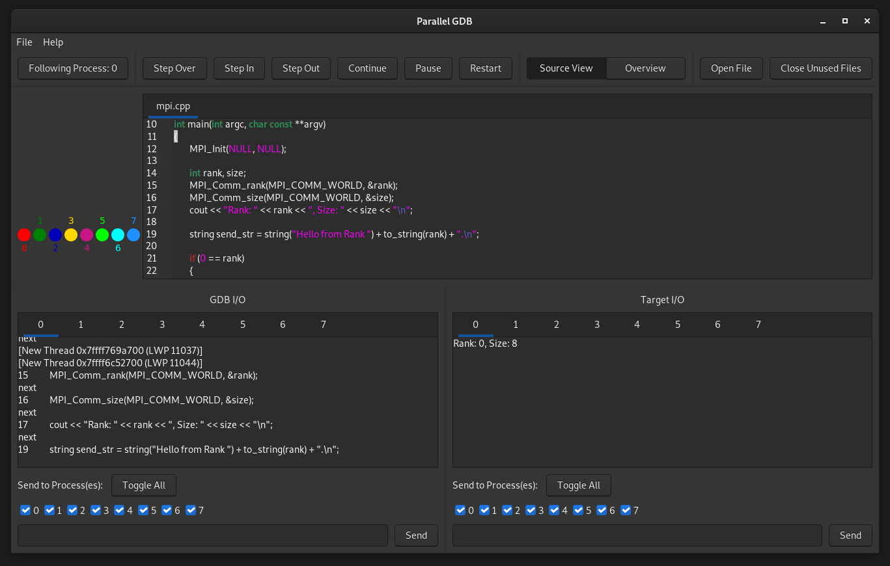

|
Parallel GDB
|
|
Parallel GDB
|
This program is for debugging parallel programs either on the local machine or on a remote cluster using SSH. It provides support to launch the processes via mpirun and srun. 
This debugger consists of two parts:
To build these two separate executables, you can use the following command from the top level directory.
mkdir bin make
This will generate a pgdb and a pgdbslave executable in the bin directory. Use
make install
to install these binaries into /usr/local/bin. If you only want a specific executable you can run
make master
or
make slave
to get the corresponding executable. Use
make clean
to delete all generated files. To delete the executables from the /usr/local/bin directory run
make uninstall
The following dependencies must be available for building the master:
On Debian based systems, you can use the following command to install them:
apt install libgtkmm-3.0-dev libgtksourceviewmm-3.0-dev libssh-dev
To build the slave only C++ standard libraries are needed.
For the debugger to work, the following programs need to be installed and be available in the $PATH environment variable of the master/slave:
Furthermore, when debugging on a remote cluster, the pgdbslave executable needs to be copied to or build on this machine.
When installed (and /usr/local/bin is included in the $PATH environment variable) the debugger is started by:
pgdb
or by searching for it in the desktop application menu. If the debugger is only built it can be run with
./bin/pgdb
In the startup dialog you need to set the path to the pgdbslave and target executable, as well as some other parameters. This configuration can be exported and imported at the next start.
The master will start the specified number of slaves, each of which will start the GDB instance, running the target program, and two socat instances, handling the I/O of GDB and the target.
If SSH is enabled, the master logs on to the remote cluster and starts the slaves there.
If you need to make specific changes to the start command, or need to use a completely different launcher, you can check the "custom" launcher option in the startup dialog. This command will invalidate all configurations except for the SSH options, the Number of Processes and the Base Port. For the master to know how many connections to open the Number of Processes still needs to be set in the startup dialog. Make SURE they match up with what you set in your custom command.
If Parallel GDB should not start the slaves at all, check the "custom" launcher option and leave the Launcher Arguments blank.
The slave supports two possibilities to set its rank and the size. Under normal conditions it will try to read the environment variables set by OpenMPI/PMI:
OMPI_COMM_WORLD_RANK OMPI_COMM_WORLD_SIZE PMI_RANK PMI_SIZE
If the launcher you are using is not setting those environment variables, you can specify custom environment variable names for the rank and size:
-k <name> # rank -z <name> # size
To directly pass the rank or size to the slave use:
-r <rank> -s <size>
The rank must be set for every slave individually, so the launch command should probably start a shell script/etc.
In this project a small example target and configuration file for it is included. It can be built with:
cd example mkdir bin make
After that the debugger can be started with:
cd .. ./bin/pgdb
Then, in the startup dialog, load the configuration file config from the example folder and customize it to your needs.